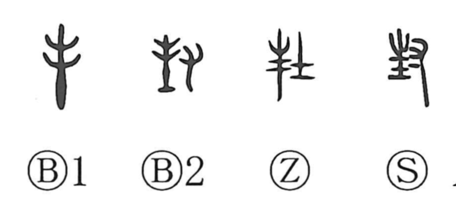

Explanation
封 combines a growing tree, 土, and 寸, a hand. 土 represents the local earth deity, and the hand plants a tree at that sacred place as a support for the divine presence. The action establishes and marks a territory.
Investing a lord with land was performed through such a rite. Early accounts describe the ruler standing at the local shrine and granting vessels, land, and people. Other ritual descriptions mark the central altar and its boundaries with differently coloured earth, preserving the relation between sacred ground and political domain.
封 therefore names enfeoffment and the boundary mound that establishes a holding. Heaping, closing, or coating something gives further uses for sealing it shut. A sealed letter then becomes a 封書. The territorial and closing senses retain the idea of fixing a defined limit.